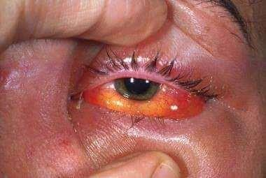

Part III · Orbital infection
Orbital cellulitis
Definition
Acute suppurative inflammation of the orbital fibrofatty tissue.
Etiology — sources of infection
- Endogenous: extension from neighboring structures, as the paranasal sinuses.
- Exogenous: as in penetrating trauma or septic orbital surgery.
- Blood borne: metastatic infection as in pyemia.
- Causative organisms: pyogenic organisms, specially staphylococci.
Clinical picture
- General: fever, malaise, headache … etc.
- Local: severe orbital pain, diplopia.
- Signs: lid edema, redness and tenderness; conjunctival chemosis; axial proptosis; limitation of ocular movements in all directions.
